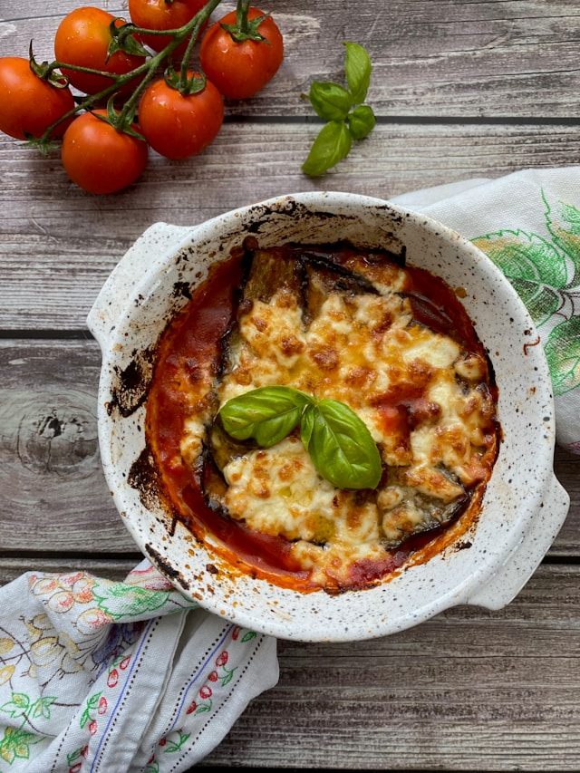

Melanzane

Description
Melanzane alla Parmigiana, as it is actually called, is a classic
Italian dish featuring layers of eggplant, tomato sauce, and cheese, baked
to golden perfection. It is a beloved comfort food known for its rich,
savory flavors and satisfying texture.
Ingredients
- Eggplant: 2 large (approximately 700g)
- Olive oil: 1/2 tbsp (for sautéing onions)
- Sunflower oil: 125ml (for frying)
- White onion: 1 (finely chopped)
- Fresh Basil: small bunch (torn)
- Tomato Passata (pureed tomatoes): 700g
- Parmigiano Reggiano cheese: 70g (freshly grated)
- Mozzarella cheese: 250g (cut into cubes)
- Flour: for dusting
- Salt and pepper: to season
Steps
- Thinly slice the eggplant and place in a colander. Sprinkle lightly with salt
and let stand for 1 hour to draw out moisture.
- While the eggpplant drains, prepare the tomato sauce. Finely chop the onion
and sauté in olive oil until translucent and soft but not browned.
Add the tomato passata and torn basil, season with salt and pepper, and simmer
for 10-15 minutes. Set aside.
- Rinse the salted eggplant slices under cold water and pat them dry
thoroughly with a kitchen towel or paper towels.
- Lightly dust the dry eggplant slices with flour, shaking off any excess.
- Heat sunflower oil in a large frying pan over medium heat. Fry the eggplant
slices for a few seconds on each side until golden brown, then drain on paper
towels to remove excess oil.
- Preheat the oven to 180°C.
- Spoon on a small amount of tomato sauce onto the bottom of the baking
dish to prevent sticking.
- Layer the dish: add a layer of fried eggplant, followed by a sprinkling of
Parmigiano Reggiano, cubes of mozzarella, a sprinkle of pepper, and a few
spoonfuls of tomato sauce. Repeat the layers until all ingredients are used,
saving some sauce for the to layer.
- For the final layer, spoon the remaining tomato sauce over the top and sprinkle
with Parmigiano Reggiano and mozzarella cheese.
- Cover the dish loosely with foil and bake for 20 minutes. Remove the foil and
bake for another 20 minutes, or until the top is golden brown and bubbling.
- Remove from the oven and let the dish rest for 5 mintues before serving to
allow the layers to set.
Pro tips
- Salting the eggplant before frying is crucial to remove excess water and prevent
a soggy dish.
- For a crispier top, broil the dish for 2-3 minutes after baking, watching
closely to prevent burning.
- Letting the dish rest before serving allows the flavors to meld and the sauce to
thicken.
Home